Penalties & Stewards
Every stewards' decision, infringement, fine and penalty from the FIA event documents.
FIA official stewards' decisions and summons
Official source; curated transcription may await review. Linked PDFs are the authority. Discovery does not extract or verify numeric values, and does not replace the curated material below.
Last successful FIA document discovery: 2026-11-14T12:46:54.269453+00:00. This is retrieval time, not issue time; newer revisions may exist.
- 2026_sao_paulo_grand_prix_-_infringement_-_car_12_-_unsafe_release.pdf (official PDF)
- 2026_sao_paulo_grand_prix_-_infringement_-_car_16_-_causing_a_collision.pdf (official PDF)
- 2026_sao_paulo_grand_prix_-_infringement_-_car_87_-_unsafe_release.pdf (official PDF)
- 2026_sao_paulo_grand_prix_-_infringement_-_race_deleted_lap_times.pdf (official PDF)
- 2026_sao_paulo_grand_prix_-_summons_-_car_16_-_alleged_unsafe_release_by_car_87.pdf (official PDF)
- 2026_sao_paulo_grand_prix_-_summons_-_car_87_-_alleged_unsafe_release.pdf (official PDF)
- 2026_sao_paulo_grand_prix_-_summons_-_car_30_-_alleged_causing_a_collision.pdf (official PDF)
- 2026_sao_paulo_grand_prix_-_summons_-_car_16_-_alleged_causing_a_collision.pdf (official PDF)
- 2026_sao_paulo_grand_prix_-_infringement_-_car_27_-_leaving_the_track_and_gaining_an_advantage.pdf (official PDF)
- 2026_sao_paulo_grand_prix_-_summons_-_car_43_-_alleged_unsafe_release_by_car_12.pdf (official PDF)
- 2026_sao_paulo_grand_prix_-_summons_-_car_12_-_alleged_unsafe_release.pdf (official PDF)
- 2026_sao_paulo_grand_prix_-_infringement_-_car_23_-_rejoining_the_track_unsafely.pdf (official PDF)
- 2026_sao_paulo_grand_prix_-_decision_-_car_11_-_alleged_failure_to_slow_under_yellow_flags.pdf (official PDF)
- 2026_sao_paulo_grand_prix_-_decision_-_car_44_-_alleged_leaving_the_track_and_gaining_an_advantage.pdf (official PDF)
- 2026_sao_paulo_grand_prix_-_infringement_-_car_18_-_failure_to_follow_race_directors_instruction_-_practice_start.pdf (official PDF)
- 2026_sao_paulo_grand_prix_-_infringement_-_car_77_-_failure_to_follow_race_directors_instruction_-_practice_start.pdf (official PDF)
- 2026_sao_paulo_grand_prix_-_infringement_-_car_6_-_failure_to_follow_race_directors_instruction_-_practice_start.pdf (official PDF)
- 2026_sao_paulo_grand_prix_-_infringement_-_car_11_-_failure_to_follow_race_directors_instruction_-_practice_start.pdf (official PDF)
- 2026_sao_paulo_grand_prix_-_infringement_-_car_27_-_failure_to_follow_race_directors_instruction_-_practice_start.pdf (official PDF)
- 2026_sao_paulo_grand_prix_-_infringement_-_car_5_-_changes_to_pu_elements.pdf (official PDF)
- 2026_sao_paulo_grand_prix_-_infringement_-_car_41_-_changes_to_pu_elements.pdf (official PDF)
- 2026_sao_paulo_grand_prix_-_infringement_-_qualifying_deleted_lap_times_-_double_yellow.pdf (official PDF)
- 2026_sao_paulo_grand_prix_-_infringement_-_qualifying_deleted_lap_times.pdf (official PDF)
- 2026_sao_paulo_grand_prix_-_infringement_-_car_44_-_additional_changes_to_pu_elements.pdf (official PDF)
- 2026_sao_paulo_grand_prix_-_infringement_-_car_87_-_reversing_in_the_pit_lane.pdf (official PDF)
- 2026_sao_paulo_grand_prix_-_infringement_-_car_11_-_driving_in_an_unsafe_condition.pdf (official PDF)
- 2026_sao_paulo_grand_prix_-_infringement_-_car_11_-_changes_to_pu_elements.pdf (official PDF)
- 2026_sao_paulo_grand_prix_-_infringement_-_car_44_-_changes_to_pu_element.pdf (official PDF)
- 2026_sao_paulo_grand_prix_-_infringement_-_free_practice_3_deleted_lap_times.pdf (official PDF)
- 2026_sao_paulo_grand_prix_-_infringement_-_car_16_-_changes_to_pu_element.pdf (official PDF)
- 2026_sao_paulo_grand_prix_-_infringement_-_car_3_-_changes_to_pu_elements.pdf (official PDF)
- 2026_sao_paulo_grand_prix_-_summons_-_car_11_-_alleged_driving_in_an_unsafe_condition.pdf (official PDF)
- 2026_sao_paulo_grand_prix_-_infringement_-_car_51_-_unnecessarily_impeding_of_car_16.pdf (official PDF)
- 2026_sao_paulo_grand_prix_-_infringement_-_free_practice_2_deleted_lap_times.pdf (official PDF)
- 2026_sao_paulo_grand_prix_-_summons_-_car_16_-_alleged_impeding_by_car_51.pdf (official PDF)
- 2026_sao_paulo_grand_prix_-_summons_-_car_51_-_alleged_impeding_of_car_16.pdf (official PDF)
- 2026_sao_paulo_grand_prix_-_infringement_-_free_practice_1_deleted_lap_times_-_double_yellow.pdf (official PDF)
- 2026_sao_paulo_grand_prix_-_infringement_-_free_practice_1_deleted_lap_times.pdf (official PDF)
- 2026_sao_paulo_grand_prix_-_infringement_-_car_43_-_pit_lane_speeding.pdf (official PDF)
- 2026_sao_paulo_grand_prix_-_infringement_-_car_63_-_changes_to_pu_element.pdf (official PDF)
Summons request a hearing; they are not findings or penalties.
| Doc | Driver | Session | Matter | Ruling |
|---|---|---|---|---|
| Doc 15 | George Russell #63 Mercedes-AMG PETRONAS F1 Team | Free Practice 1 | The following Power Unit elements have been used: | Penalty Drop of 5 grid positions for the next Race in which the driver participates.View FIA decision — 1 pageOriginal FIA PDF. Retrieved 2026-11-14T12:46:55+00:00 (not the issue date).  |
| Doc 16 | Franco Colapinto #43 BWT Alpine F1 Team | Free Practice 1 | Pit lane speeding – 80.6 km/h | Fine The competitor (BWT Alpine F1 Team) is fined €100.View FIA decision — 1 pageOriginal FIA PDF. Retrieved 2026-11-14T12:46:55+00:00 (not the issue date).  |
| Doc 18 | Dino Beganovic; Kimi Antonelli; Colton Herta; Lance Stroll; Gabriel Bortoleto; Lewis Hamilton; Alexander Albon; Rafael Camara; Arvid Lindblad; George Russell | Free Practice 1 | The F1 Cars below did not use the track at turns 1, 7, 10 and 12. | Note Deletion of the lap times shown in accordance with Article 12.4.1.e of the FIA InternationalView FIA decision — 2 pagesOriginal FIA PDF. Retrieved 2026-11-14T12:46:55+00:00 (not the issue date).   |
| Doc 19 | Franco Colapinto; Alexander Albon; Luke Browning; Rafael Camara; Dino Beganovic | Free Practice 1 | The F1 Cars passed through a double waved yellow flag marshalling sector. | Note Deletion of the lap times shown in accordance with Article 12.4.1.e of the FIA InternationalView FIA decision — 1 pageOriginal FIA PDF. Retrieved 2026-11-14T12:46:55+00:00 (not the issue date).  |
| Doc 23 | Liam Lawson; Rafael Camara; Alexander Albon; Sergio Perez; George Russell; Kimi Antonelli; Lance Stroll; Pierre Gasly; Lewis Hamilton | Free Practice 2 | The F1 Cars below did not use the track at turns 1 and 4. | Note Deletion of the lap times shown in accordance with Article 12.4.1.e of the FIA International Sporting Code.View FIA decision — 2 pagesOriginal FIA PDF. Retrieved 2026-11-14T12:46:55+00:00 (not the issue date).   |
| Doc 25 | Rafael Camara #51 TGR Haas F1 Team | Free Practice 2 | Car 51 unnecessarily impeded Car 16 in turn 15. | Reprimand Driver: Reprimand (Driving). This is the driver’s 1st reprimand of the season.View FIA decision — 2 pagesOriginal FIA PDF. Retrieved 2026-11-14T12:46:55+00:00 (not the issue date).   |
| Doc 33 | Max Verstappen #3 Oracle Red Bull Racing | Free Practice 3 | The following Power Unit elements have been used: 5th Engine (ICE); 5th Turbocharger (TC); 5th Exhaust Set (EXH). | Penalty Drop of 30 grid positions for the next Race in which the driver participates. Subject to Car 3 being classified in Qualifying, Car 3 will be allocated a grid position in the Race in accordance with Article B2.5.4.b.iv of the FIA F1 Regulations.View FIA decision — 1 pageOriginal FIA PDF. Retrieved 2026-11-14T12:46:55+00:00 (not the issue date). 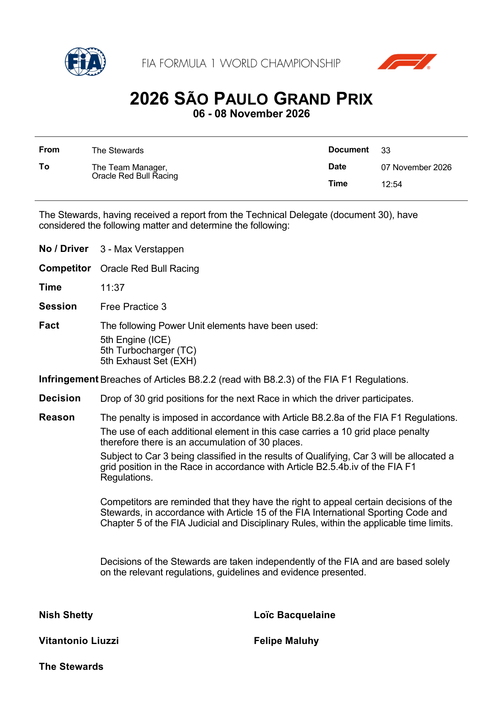 |
| Doc 35 | Charles Leclerc #16 Scuderia Ferrari HP | Free Practice 3 | The fifth Engine (ICE) has been used. | Penalty Drop of 10 grid positions for the next Race in which the driver participates.View FIA decision — 1 pageOriginal FIA PDF. Retrieved 2026-11-14T12:46:55+00:00 (not the issue date). 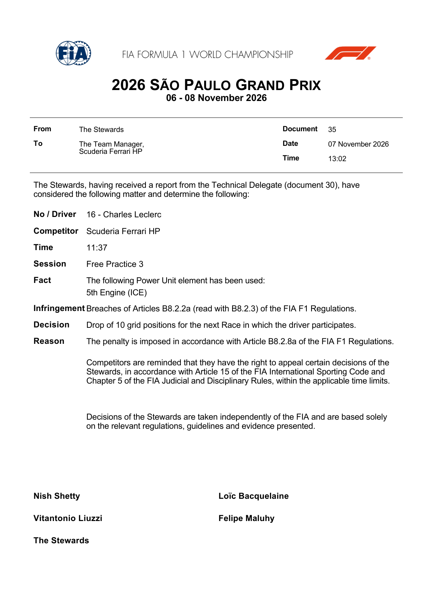 |
| Doc 36 | Rafael Camara; Max Verstappen | Free Practice 3 | Car 51 did not use the track at Turn 1 (11:35:37, 1:34.799); Car 3 did not use the track at Turn 4 (11:57:43, 1:52.648). | Note Deletion of the listed lap times under Article 12.4.1.e of the FIA International Sporting Code.View FIA decision — 1 pageOriginal FIA PDF. Retrieved 2026-11-14T12:46:55+00:00 (not the issue date). 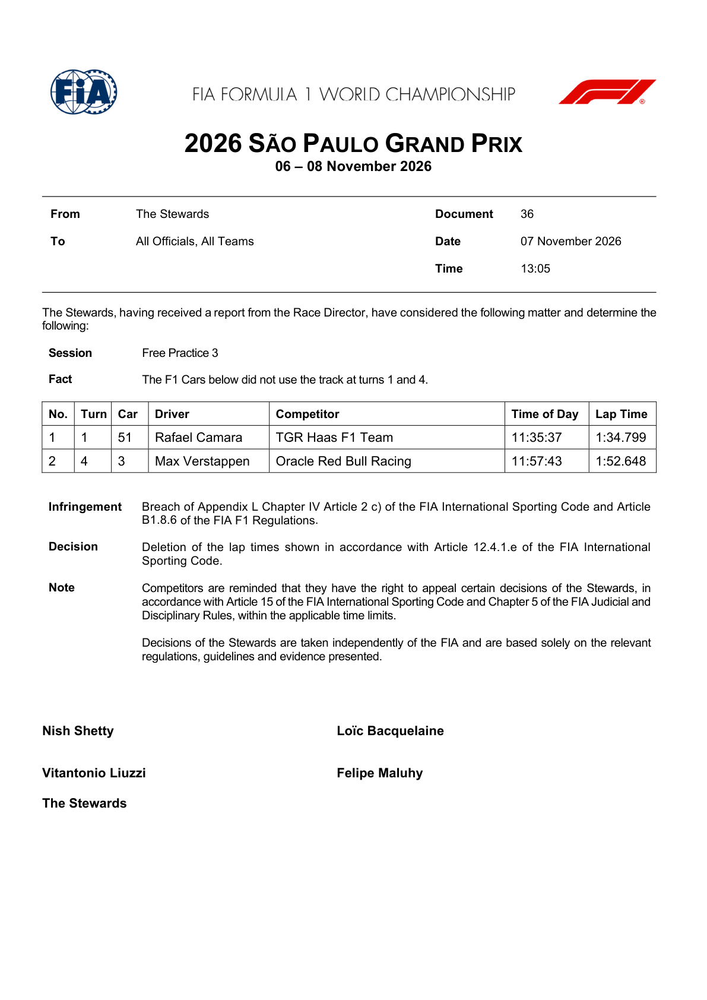 |
| Doc 37 | Lewis Hamilton #44 Scuderia Ferrari HP | Free Practice 3 | The fifth Engine (ICE) has been used. | Penalty Drop of 10 grid positions for the next Race in which the driver participates.View FIA decision — 1 pageOriginal FIA PDF. Retrieved 2026-11-14T12:46:55+00:00 (not the issue date). |
| Doc 39 | Sergio Perez #11 Cadillac Formula 1 Team | Free Practice 3 | The following Power Unit elements have been used: 5th Engine (ICE) 5th Turbocharger (TC) 4th MGU-K | Penalty Drop of 30 grid positions for the next Race in which the driver participates.View FIA decision — 1 pageOriginal FIA PDF. Retrieved 2026-11-14T12:46:55+00:00 (not the issue date). 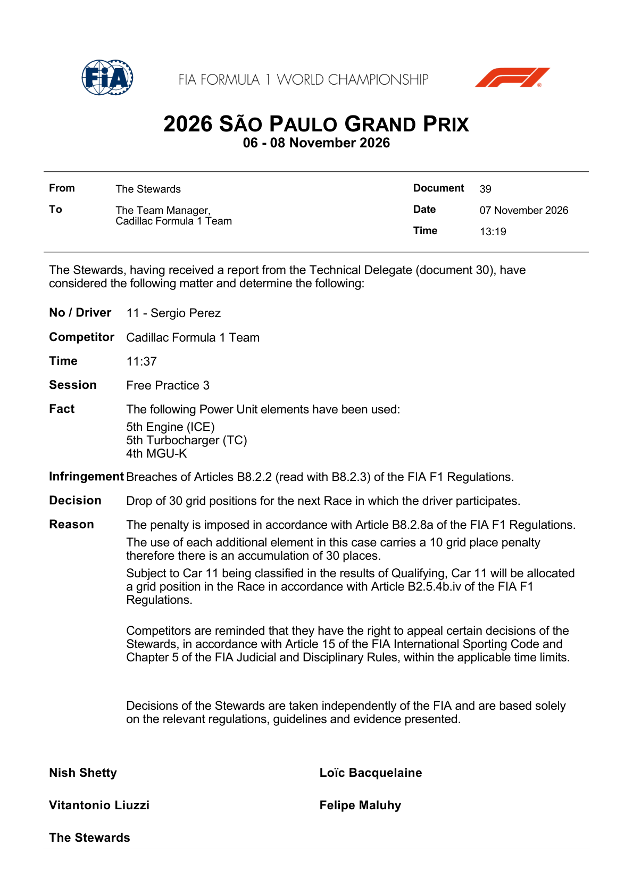 |
| Doc 40 | Sergio Perez #11 Cadillac Formula 1 Team | Free Practice 3 | Car 11 drove in an unsafe condition. | Warning Competitor: Formal warning.View FIA decision — 2 pagesOriginal FIA PDF. Retrieved 2026-11-14T12:46:55+00:00 (not the issue date). 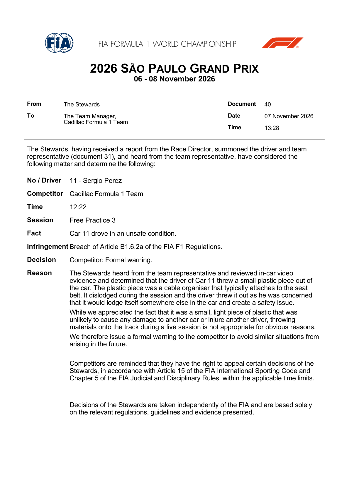 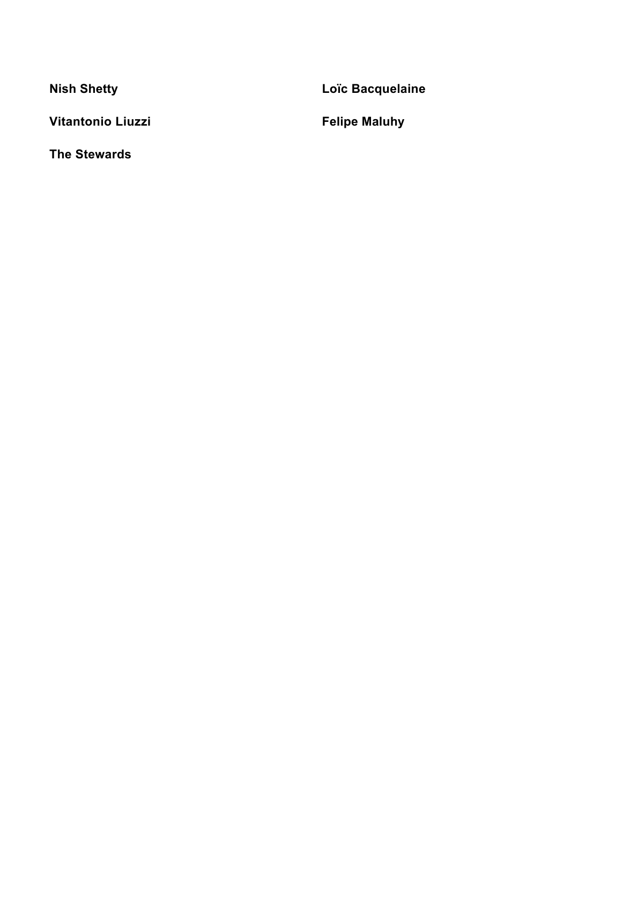 |
| Doc 41 | Oliver Bearman #87 TGR Haas F1 Team | Qualifying | Car 87 reversed in the Pit Lane. | Reprimand Driver: Reprimand (Driving). This is the driver’s 2nd reprimand of the season.View FIA decision — 1 pageOriginal FIA PDF. Retrieved 2026-11-14T12:46:55+00:00 (not the issue date). 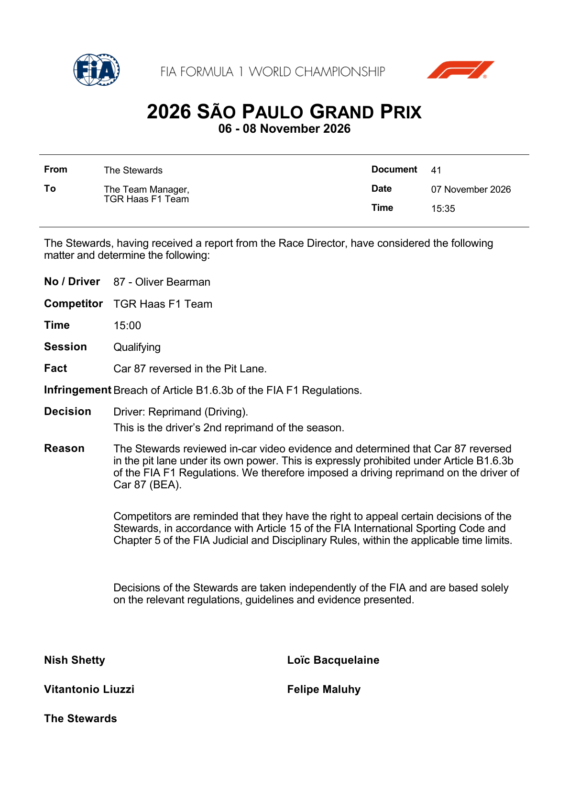 |
| Doc 43 | Lewis Hamilton #44 Scuderia Ferrari HP | Qualifying | The following Power Unit elements have been used: 6th Engine (ICE) 5th Turbocharger (TC) 5th Exhaust Set (EXH) 4th Energy Store (ES) 4th Control Electronics Unit (PU-CE) 4th MGU-K 7th Power Unit Ancil | Penalty Drop of 65 grid positions for the next Race in which the driver participates.View FIA decision — 2 pagesOriginal FIA PDF. Retrieved 2026-11-14T12:46:55+00:00 (not the issue date). 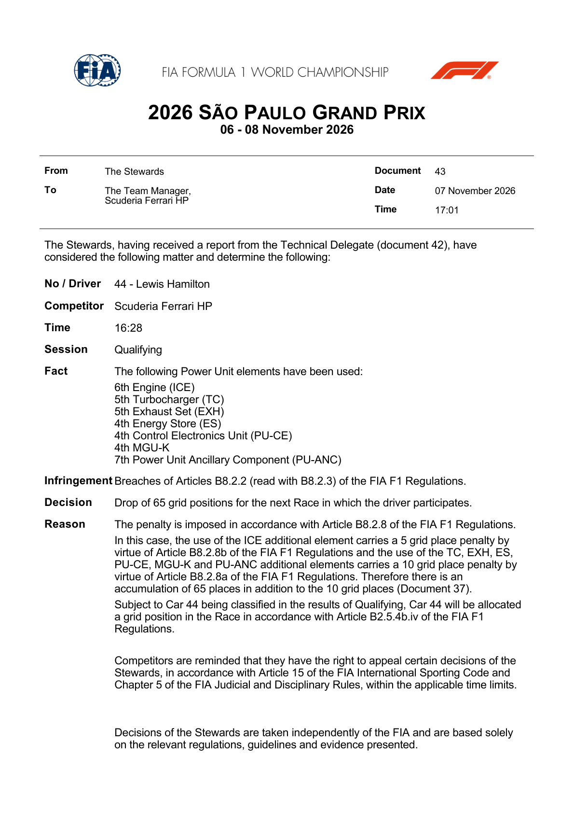 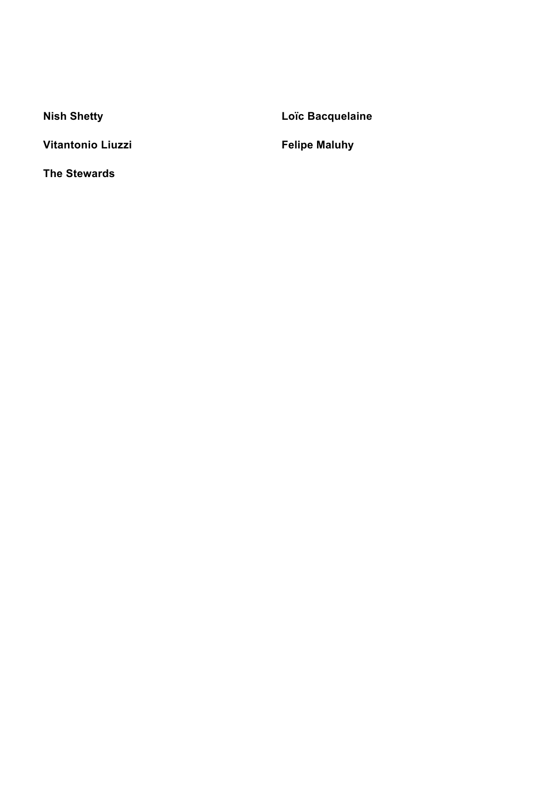 |
| Doc 44 | Rafael Camara; Gabriel Bortoleto; Lance Stroll; Carlos Sainz; Oliver Bearman; Sergio Perez | Qualifying | The F1 Cars below did not use the track at turns 1, 4, 8 and 12. | Note Deletion of the lap times shown in accordance with Article 12.4.1.e of the FIA International Sporting Code.View FIA decision — 1 pageOriginal FIA PDF. Retrieved 2026-11-14T12:46:55+00:00 (not the issue date). 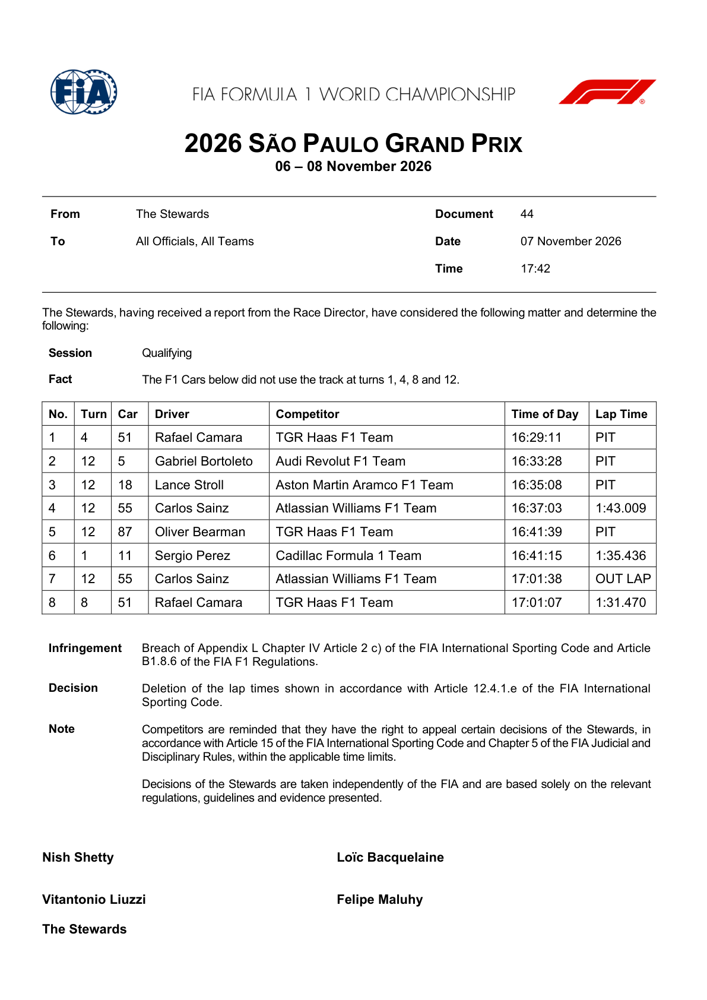 |
| Doc 46 | Lance Stroll #18 | Qualifying | The F1 Car passed through a double waved yellow flag marshalling sector. | Note Deletion of the lap time shown in accordance with Article 12.4.1.e of the FIA International Sporting Code.View FIA decision — 1 pageOriginal FIA PDF. Retrieved 2026-11-14T12:46:55+00:00 (not the issue date). 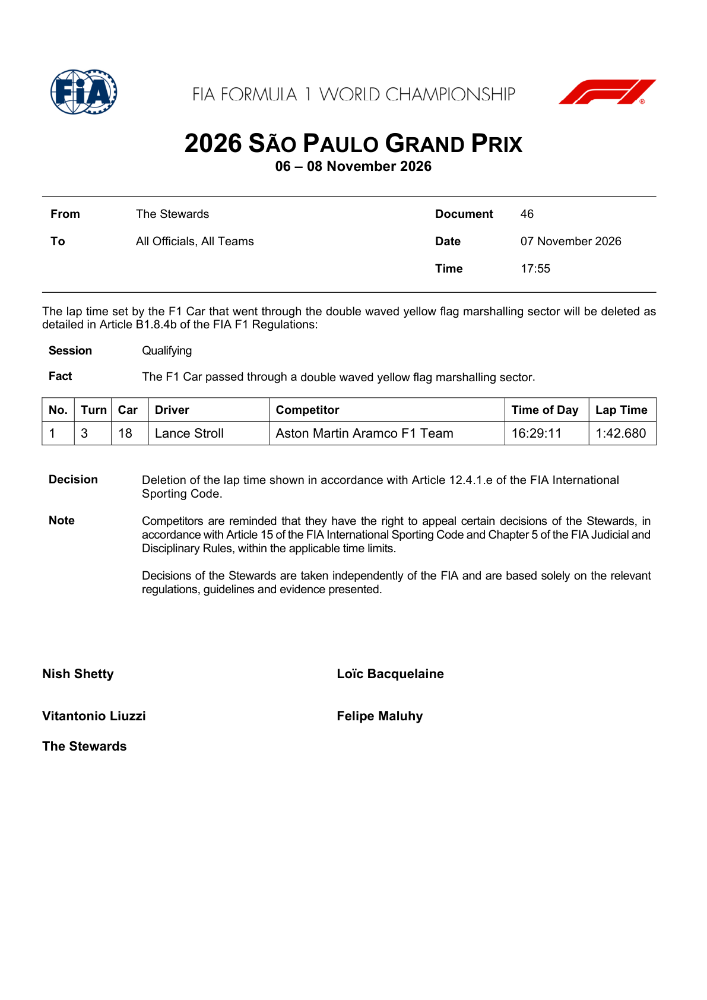 |
| Doc 56 | Arvid Lindblad #41 Visa Cash App Racing Bulls F1 Team | Qualifying | The following Power Unit elements have been used: 7th Engine (ICE) 6th Turbocharger (TC) All Power Unit elements were replaced with the approval of the FIA Technical Delegate during parc fermé. | Penalty Drop of 10 grid positions for the next Race in which the driver participates.View FIA decision — 1 pageOriginal FIA PDF. Retrieved 2026-11-14T12:46:55+00:00 (not the issue date). 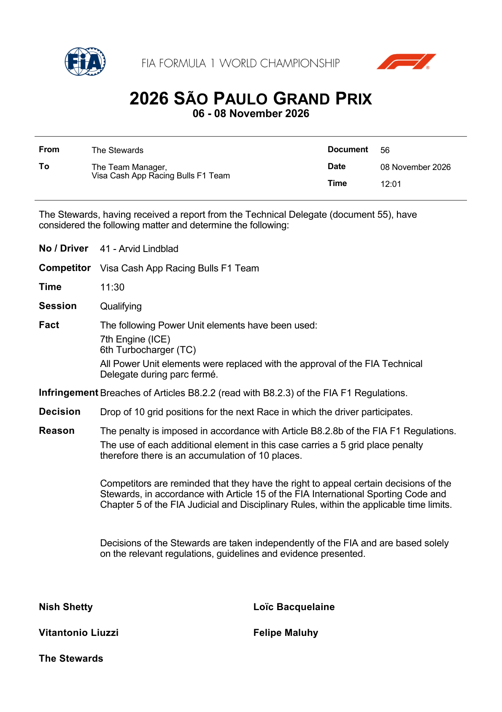 |
| Doc 57 | Gabriel Bortoleto #5 Audi Revolut F1 Team | Qualifying | The following Power Unit elements have been used: 6th Energy Store (ES) 6th Control Electronics Unit (PU-CE) All Power Unit elements were replaced with the approval of the FIA Technical Delegate durin | Penalty Drop of 10 grid positions for the next Race in which the driver participates.View FIA decision — 1 pageOriginal FIA PDF. Retrieved 2026-11-14T12:46:55+00:00 (not the issue date). 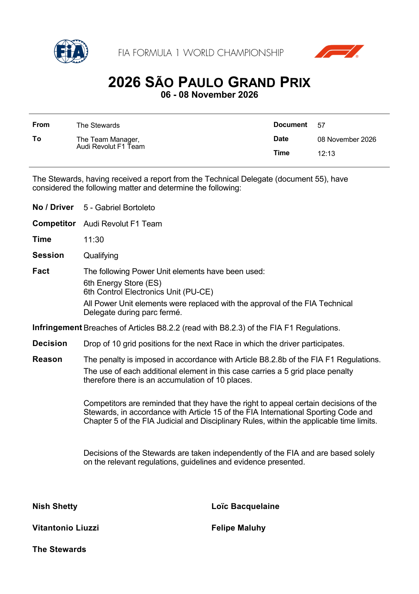 |
| Doc 60 | Nico Hulkenberg #27 Audi Revolut F1 Team | Reconnaissance Laps | Car 27 did not cross the pit exit white line at the earliest opportunity. | Reprimand Driver: Reprimand (Driving). This is the driver’s 3rd reprimand of the season.View FIA decision — 1 pageOriginal FIA PDF. Retrieved 2026-11-14T12:46:55+00:00 (not the issue date). 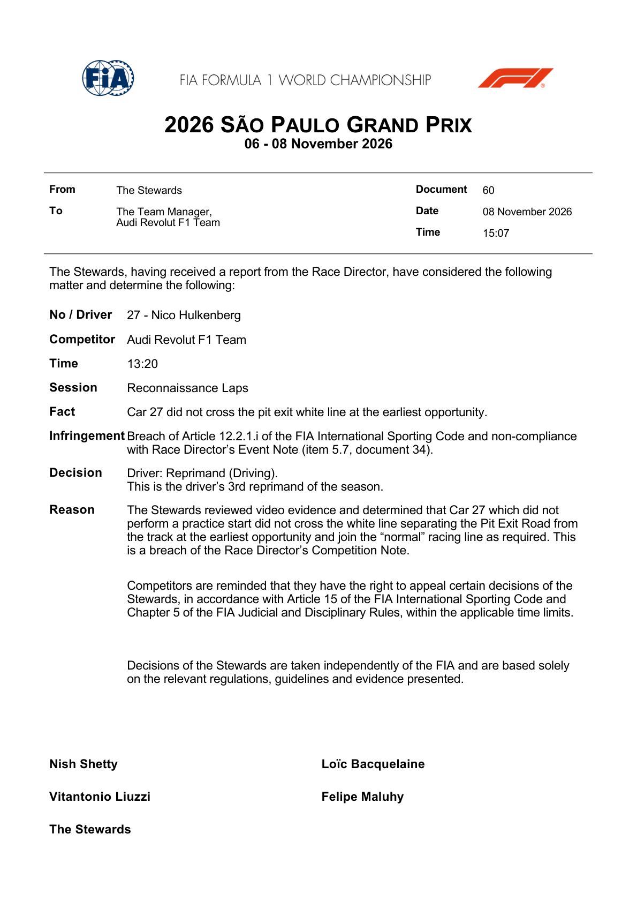 |
| Doc 61 | Sergio Perez #11 Cadillac Formula 1 Team | Reconnaissance Laps | Car 11 did not cross the pit exit white line at the earliest opportunity. | Reprimand Driver: Reprimand (Driving). This is the driver’s 4th reprimand of the season.View FIA decision — 1 pageOriginal FIA PDF. Retrieved 2026-11-14T12:46:55+00:00 (not the issue date). |
| Doc 62 | Isack Hadjar #6 Oracle Red Bull Racing | Reconnaissance Laps | Car 6 did not cross the pit exit white line at the earliest opportunity. | Reprimand Driver: Reprimand (Driving). This is the driver’s 2nd reprimand of the season.View FIA decision — 1 pageOriginal FIA PDF. Retrieved 2026-11-14T12:46:55+00:00 (not the issue date). 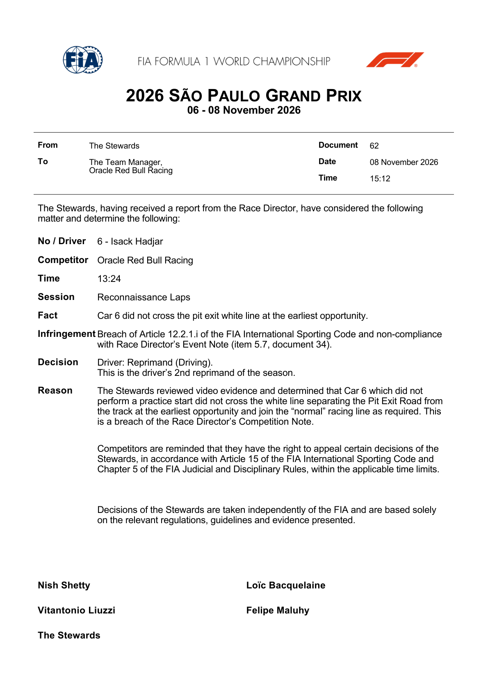 |
| Doc 63 | Valtteri Bottas #77 Cadillac Formula 1 Team | Reconnaissance Laps | Car 77 did not cross the pit exit white line at the earliest opportunity. | Reprimand Driver: Reprimand (Driving). This is the driver’s 1st reprimand of the season.View FIA decision — 1 pageOriginal FIA PDF. Retrieved 2026-11-14T12:46:55+00:00 (not the issue date). |
| Doc 64 | Lance Stroll #18 Aston Martin Aramco F1 Team | Reconnaissance Laps | Car 18 did not cross the pit exit white line at the earliest opportunity. | Reprimand Driver: Reprimand (Driving). This is the driver’s 1st reprimand of the season.View FIA decision — 1 pageOriginal FIA PDF. Retrieved 2026-11-14T12:46:55+00:00 (not the issue date). |
| Doc 65 | Lewis Hamilton #44 Scuderia Ferrari HP | Race | Car 44 allegedly left the track at turn 5 and gained a lasting advantage. | No action No further action.View FIA decision — 1 pageOriginal FIA PDF. Retrieved 2026-11-14T12:46:55+00:00 (not the issue date). 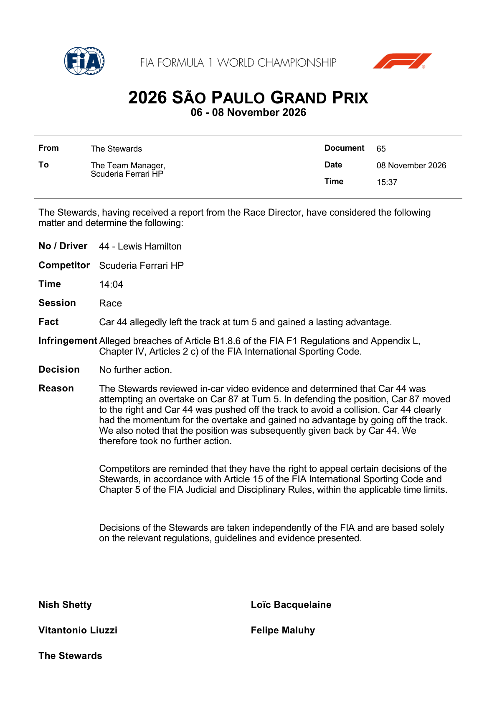 |
| Doc 66 | Sergio Perez #11 Cadillac Formula 1 Team | Race | Car 11 alleged failure to slow for double yellow flags. | No action No further action.View FIA decision — 2 pagesOriginal FIA PDF. Retrieved 2026-11-14T12:46:55+00:00 (not the issue date). 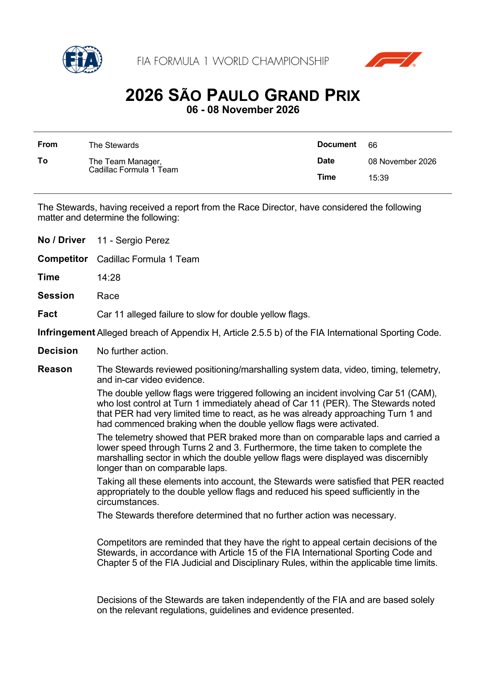 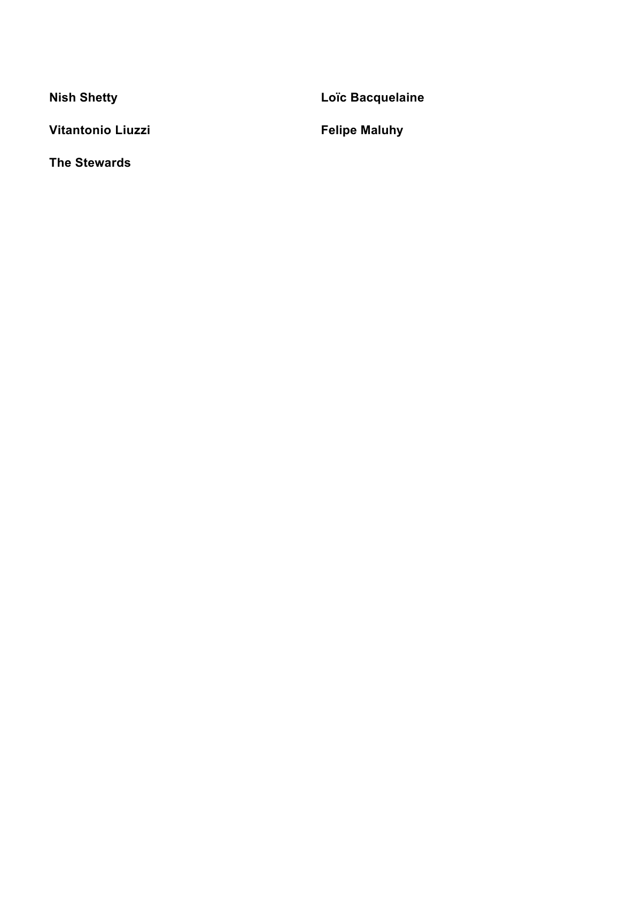 |
| Doc 67 | Alexander Albon #23 Atlassian Williams F1 Team | Race | Car 23 rejoined the track in an unsafe manner. | Penalty 5 second time penalty. 2 penalty points (total of 3 for the 12 month period).View FIA decision — 1 pageOriginal FIA PDF. Retrieved 2026-11-14T12:46:55+00:00 (not the issue date). 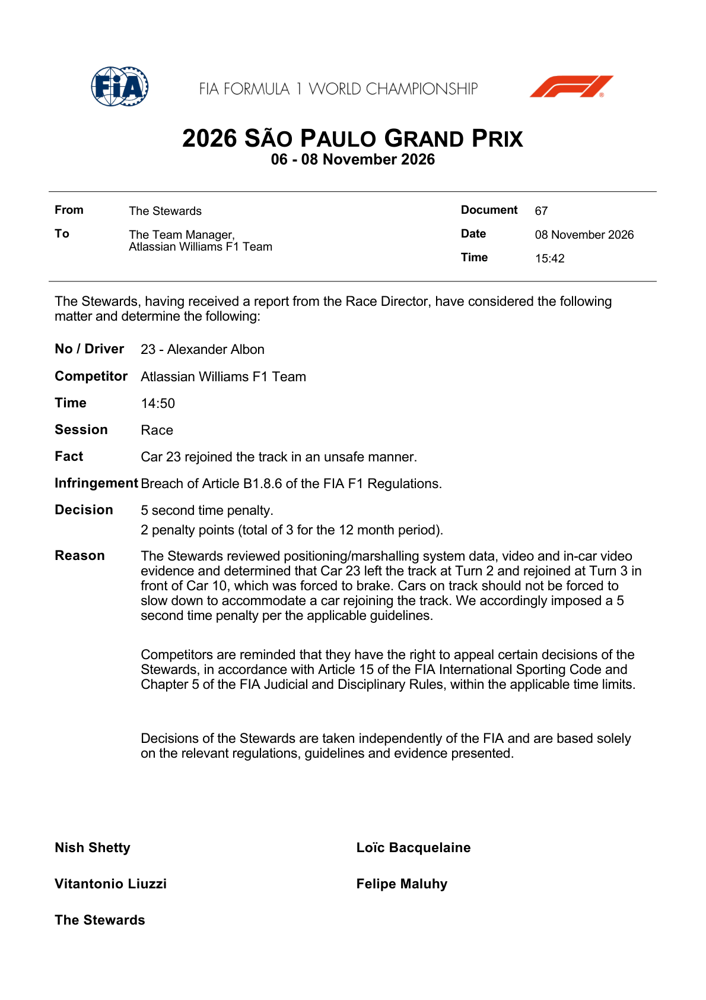 |
| Doc 71 | Nico Hulkenberg #27 Audi Revolut F1 Team | Race | Car 27 left the track and gained a lasting advantage. | Penalty 10 second time penalty.View FIA decision — 1 pageOriginal FIA PDF. Retrieved 2026-11-14T12:46:55+00:00 (not the issue date). 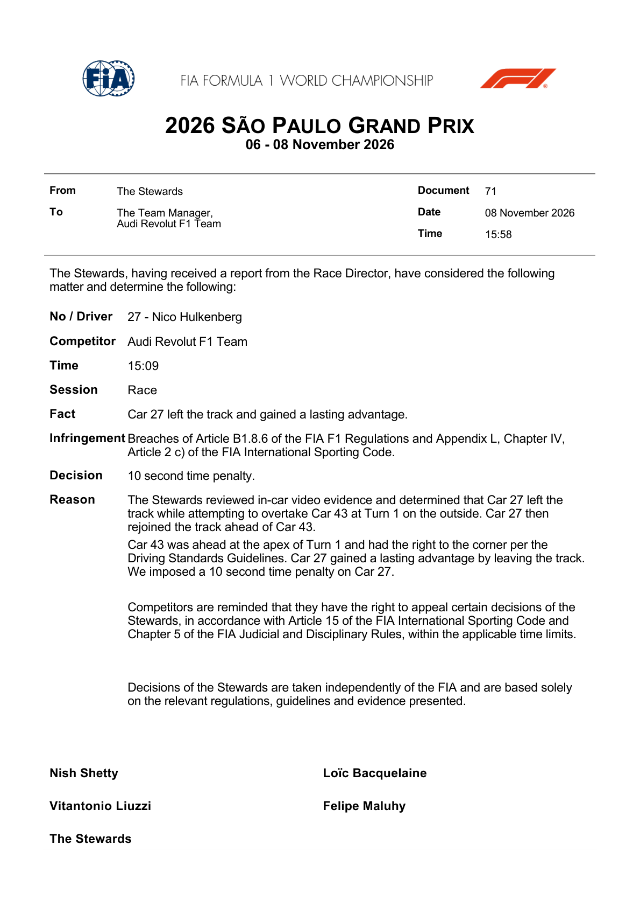 |
| Doc 76 | Gabriel Bortoleto; Rafael Camara; Kimi Antonelli; Oliver Bearman; Alexander Albon; Nico Hulkenberg; Franco Colapinto; Carlos Sainz; Max Verstappen; Lewis Hamilton | Race | The F1 Cars below did not use the track at turns 1, 2, 3, 4, 7 and 8. | Note Deletion of the lap times shown in accordance with Article 12.4.1.e of the FIA International Sporting Code.View FIA decision — 2 pagesOriginal FIA PDF. Retrieved 2026-11-14T12:46:55+00:00 (not the issue date). 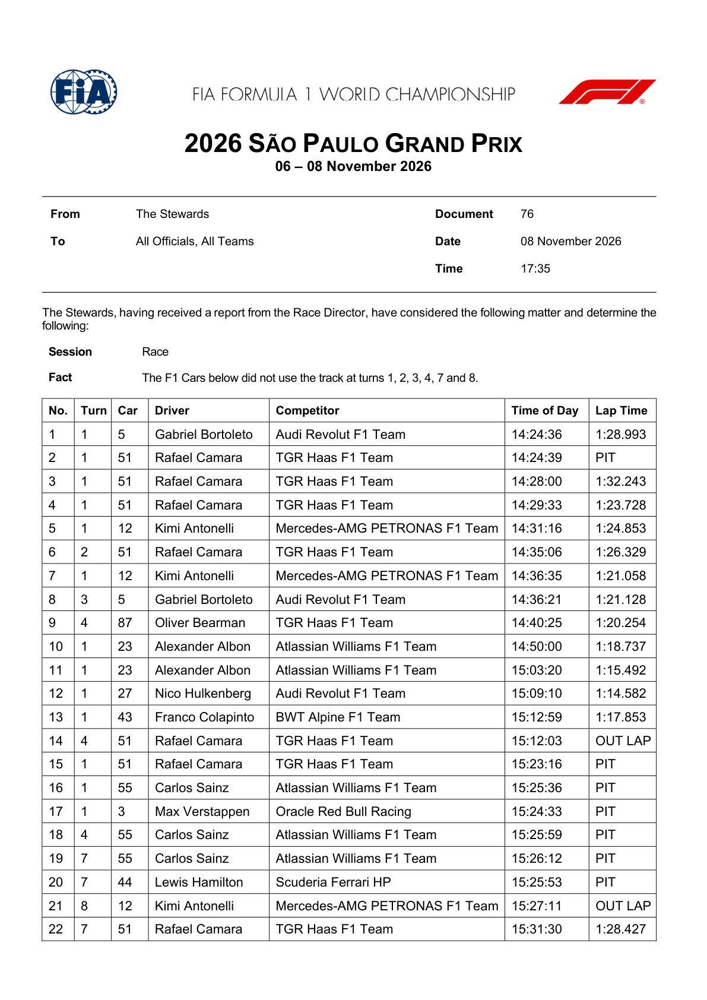 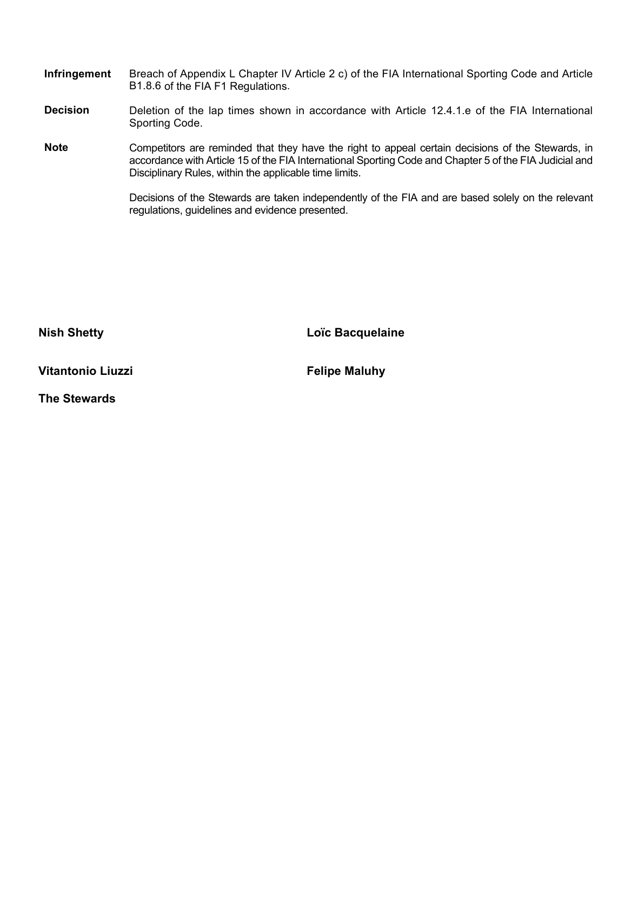 |
| Doc 78 | Oliver Bearman #87 TGR Haas F1 Team | Race | Car 87 was released in an unsafe manner into the path of Car 16, forcing Charles Leclerc to brake and take evasive action. | Penalty 5 second time penalty (5 seconds added to elapsed Race time).View FIA decision — 2 pagesOriginal FIA PDF. Retrieved 2026-11-14T12:46:55+00:00 (not the issue date). 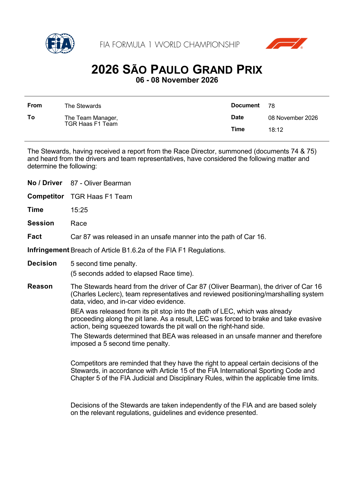  |
| Doc 79 | Charles Leclerc #16 Scuderia Ferrari HP | Race | Car 16 made contact with Liam Lawson's Car 30 at Turn 12; the Stewards found the contact disrupted Car 30 and helped Car 16 overtake it five corners later. | Penalty 5 second time penalty (5 seconds added to elapsed Race time); wet conditions and the minor contact mitigated the penalty from ten seconds.View FIA decision — 2 pagesOriginal FIA PDF. Retrieved 2026-11-14T12:46:55+00:00 (not the issue date). 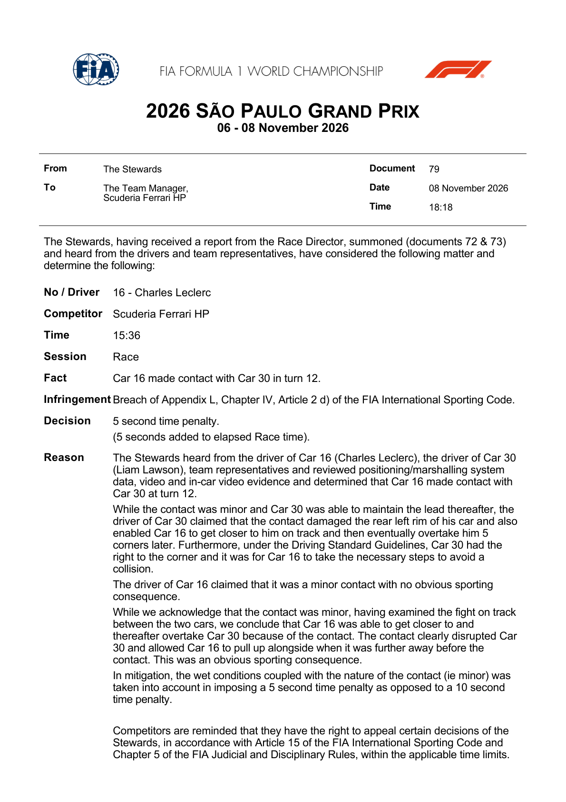 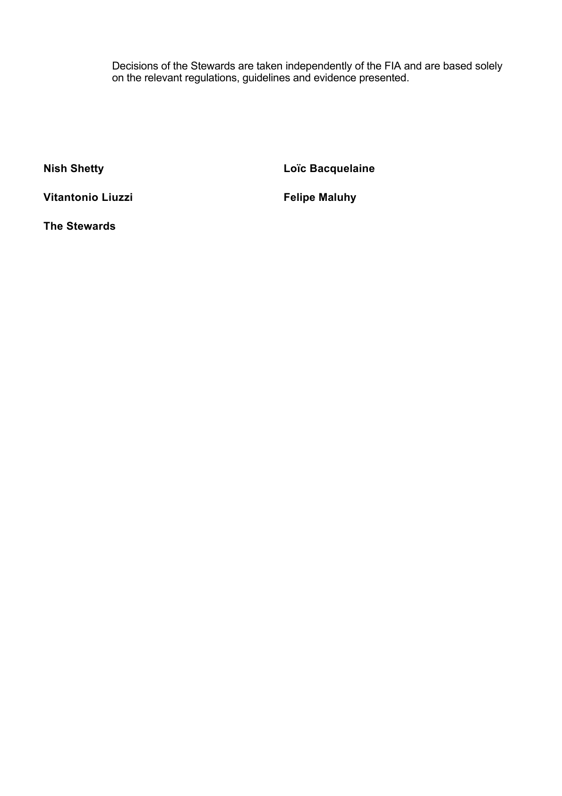 |
| Doc 80 | Kimi Antonelli #12 Mercedes-AMG PETRONAS F1 Team | Race | Car 12 was released in an unsafe manner into Franco Colapinto's Car 43 path; Antonelli had to take steps to avoid a collision on the slippery surface. | Penalty 5 second time penalty (5 seconds added to elapsed Race time).View FIA decision — 2 pagesOriginal FIA PDF. Retrieved 2026-11-14T12:46:55+00:00 (not the issue date). 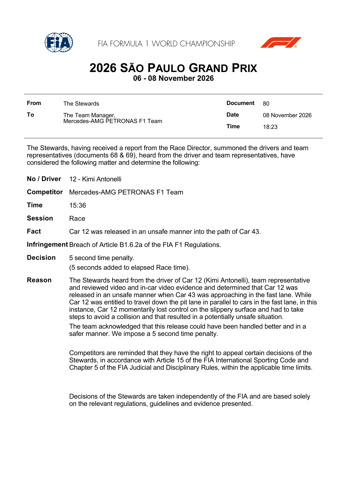 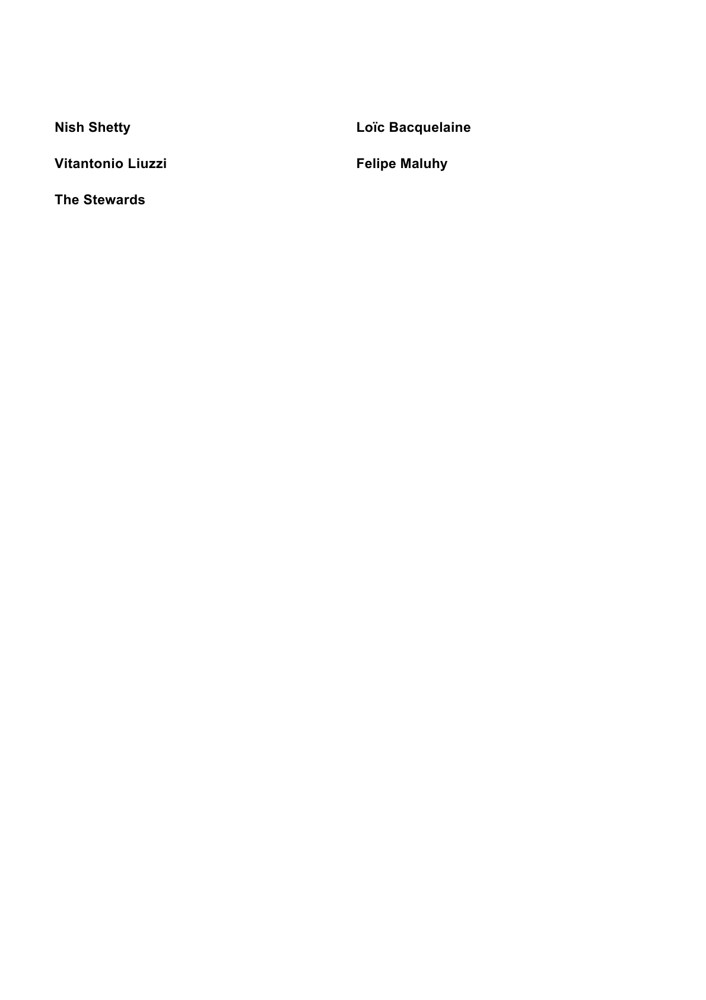 |
Source: FIA — São Paulo Grand Prix documents (stewards' decisions).
Official FIA document screenshots
Automatically rendered from the official PDFs. These figures do not update or verify the curated numeric transcriptions above. Unchanged pages already illustrated above are not repeated here.
2026_sao_paulo_grand_prix_-_summons_-_car_16_-_alleged_unsafe_release_by_car_87.pdf
PDF retrieved 2026-11-14T12:46:55+00:00; this is not its issue date.
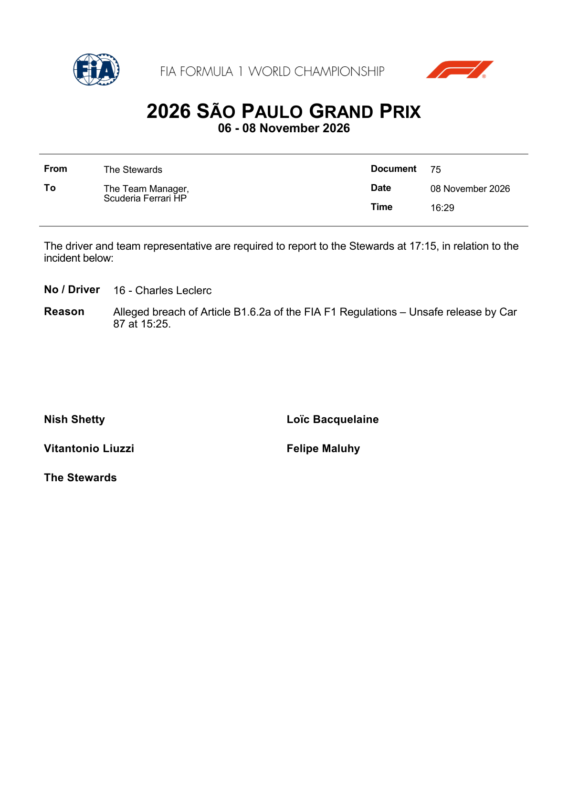
2026_sao_paulo_grand_prix_-_summons_-_car_87_-_alleged_unsafe_release.pdf
PDF retrieved 2026-11-14T12:46:55+00:00; this is not its issue date.
2026_sao_paulo_grand_prix_-_summons_-_car_30_-_alleged_causing_a_collision.pdf
PDF retrieved 2026-11-14T12:46:55+00:00; this is not its issue date.
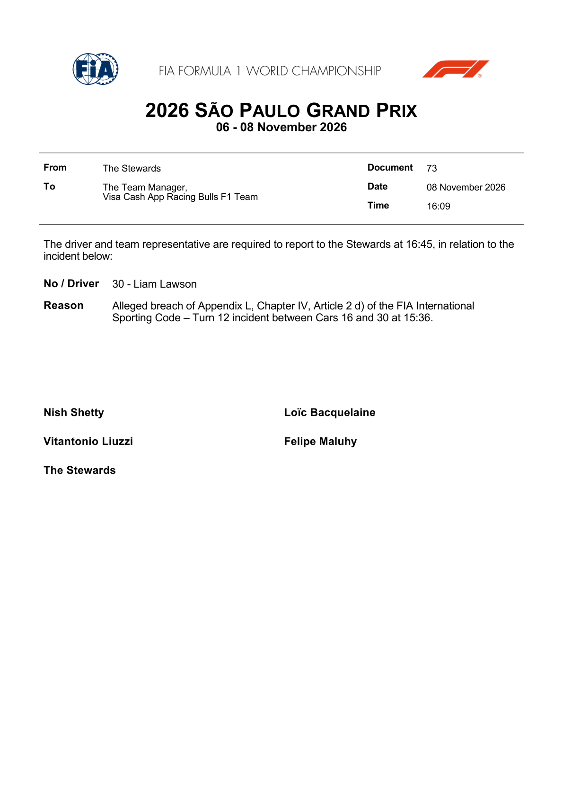
2026_sao_paulo_grand_prix_-_summons_-_car_16_-_alleged_causing_a_collision.pdf
PDF retrieved 2026-11-14T12:46:55+00:00; this is not its issue date.
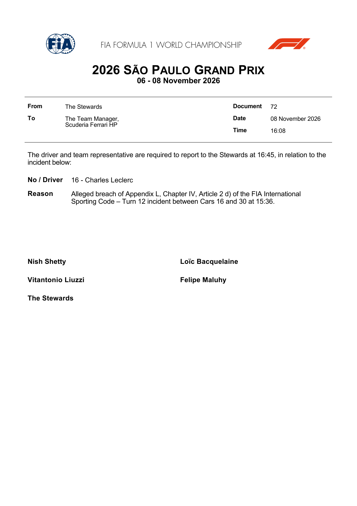
2026_sao_paulo_grand_prix_-_summons_-_car_43_-_alleged_unsafe_release_by_car_12.pdf
PDF retrieved 2026-11-14T12:46:55+00:00; this is not its issue date.
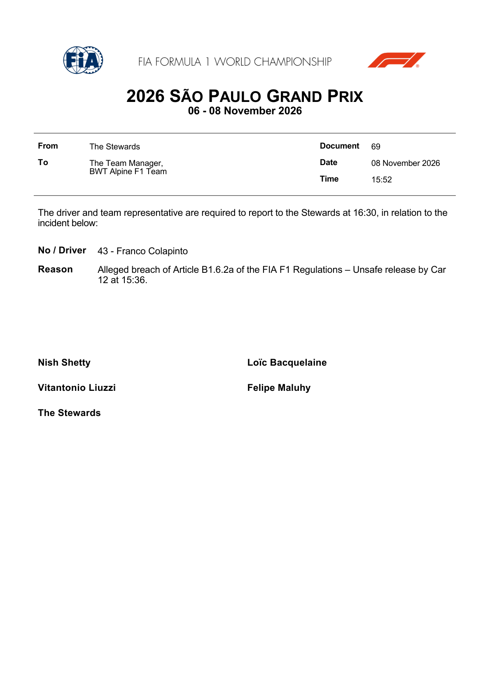
2026_sao_paulo_grand_prix_-_summons_-_car_12_-_alleged_unsafe_release.pdf
PDF retrieved 2026-11-14T12:46:55+00:00; this is not its issue date.
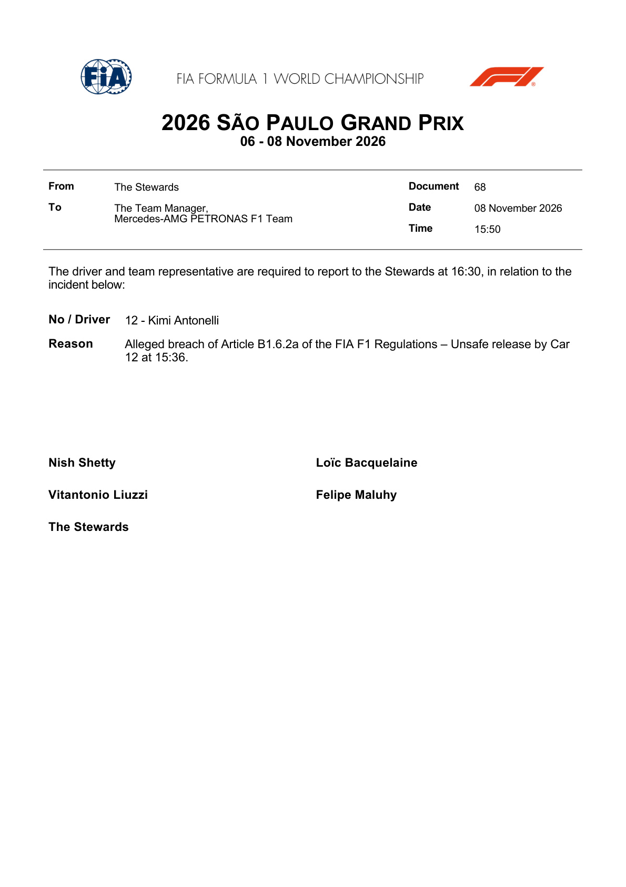
2026_sao_paulo_grand_prix_-_summons_-_car_11_-_alleged_driving_in_an_unsafe_condition.pdf
PDF retrieved 2026-11-14T12:46:55+00:00; this is not its issue date.
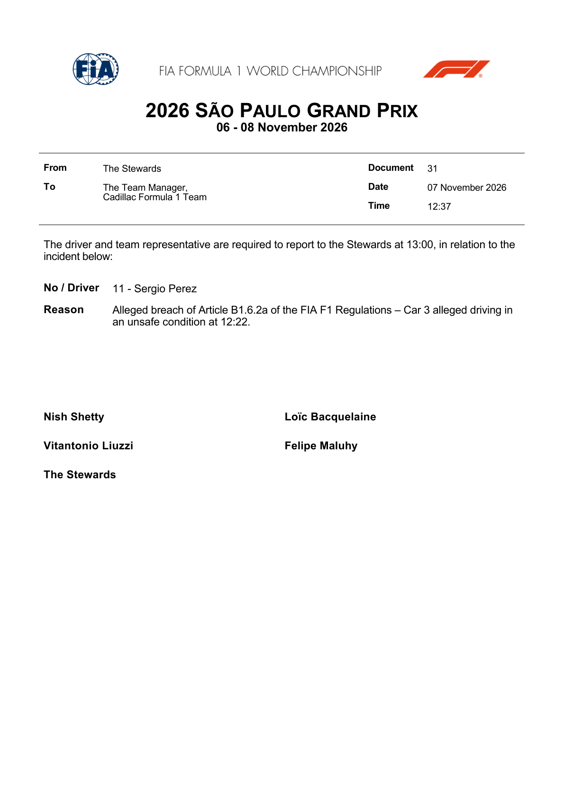
2026_sao_paulo_grand_prix_-_summons_-_car_16_-_alleged_impeding_by_car_51.pdf
PDF retrieved 2026-11-14T12:46:55+00:00; this is not its issue date.

2026_sao_paulo_grand_prix_-_summons_-_car_51_-_alleged_impeding_of_car_16.pdf
PDF retrieved 2026-11-14T12:46:55+00:00; this is not its issue date.